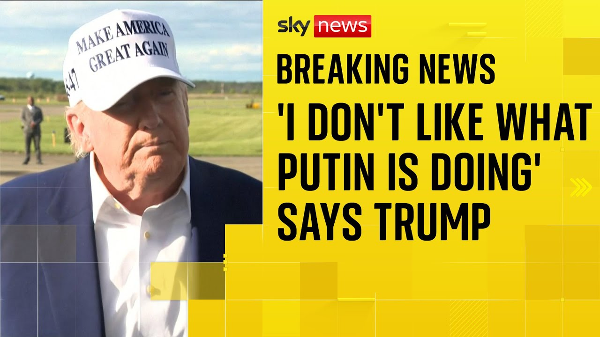

【特朗普称对普京在乌克兰的致命袭击"不满意"】
Summary: The speaker reflects on recent successes at West Point and productive talks with Iran and Hamas, expresses optimism about potential agreements, discusses budget bill negotiations with the Senate, comments on federal investigations, addresses tariffs with the EU, outlines US Steel ownership plans, responds to a Saudi detainee case, condemns Putin's actions in Ukraine, criticizes Harvard's foreign student policies, and emphasizes focus on advanced manufacturing over textiles.
摘要： 发言者回顾了近期在西点军校的成果及与伊朗、哈马斯的建设性对话，对潜在协议表示乐观，讨论了与参议院的预算法案谈判，就联邦调查发表评论，回应了欧盟关税问题，概述了美国钢铁公司所有权计划，对沙特拘留案件作出回应，谴责普京在乌克兰的行动，批评哈佛大学外国学生政策，并强调重点发展先进制造业而非纺织品。

⏱️ Estimated Reading Time: 16 min
Thank you very much.
非常感谢。
I think we've uh done a lot of good work over the last couple of days.
我认为我们过去几天做了很多有益的工作。
Being at West Point yesterday was incredible.
昨天在西点军校的经历非常棒。
What incredible people they are and I think it was a very big success and it was an honor to be there.
他们是非常了不起的人，我认为这次活动非常成功，能出席是我的荣幸。
Very importantly, we had some very good talks with Iran yesterday and today and let's see what happens.
非常重要的是，我们昨天和今天与伊朗进行了很好的会谈，让我们看看结果如何。
But I think we could have some good news on the Iran front.
但我认为在伊朗问题上可能会有好消息。
Likewise with Hamas on the uh on Gaza.
加沙地带的哈马斯问题也是如此。
We want to see if we can stop that and Israel.
我们希望看看能否停止这种情况，以色列也是。
We've been talking to them and we want to see if we can stop that whole situation as quickly as possible.
我们一直在与他们交谈，希望尽快结束整个局势。
But uh having to do with nuclear, we've had some very very good talks with Iran and I don't know if I'll be telling you anything good or bad over the next two days, but I have a feeling I might be telling you something good.
但在核问题上，我们与伊朗进行了非常非常好的会谈，我不知道未来两天会告诉你们好消息还是坏消息，但感觉可能会是好消息。
We've had uh some real progress, serious progress.
我们已经取得了一些真正的、重大的进展。
Uh on any other front, I don't know.
在其他方面，我不知道。
Do you have any questions?
你们有什么问题吗？
Uh do you have a message for the Senate?
你对参议院有什么要说的吗？
Uh a lot of Republicans have said they're going to be significant changes to the budget bill.
很多共和党人表示将对预算案进行重大修改。
Well, I want the Senate and the Senate and the Senators to change, you know, to make the changes they want and we'll go back to the House and we'll see if we can get them.
我希望参议院和参议员们做出他们想要的修改，然后我们会回到众议院看看能否通过。
In some cases, those changes maybe are something I'd agree with, to be honest.
说实话，有些修改我可能会同意。
You know, it happens.
这种情况时有发生。
Uh, but we've had a very good response from the Senate.
但我们从参议院得到了很好的回应。
And I don't know how Democrats can't vote for it.
我不知道民主党人为何不能支持它。
If they don't vote for it, they're talking about a 68% tax increase.
如果他们不支持，就意味着68%的增税。
Remember that if the Democrats don't vote, it's a 68% tax increase, which is ridiculous.
记住，如果民主党不投票，就是68%的增税，这太荒谬了。
And one of the things that's being covered indirectly is the fact that we'll be lowering the cost of drugs from 50 to 85% under Trump.
间接涉及的一点是，在特朗普任期内我们将把药品成本降低50%到85%。
And it's going to have indirectly something to do, not directly, but indirectly something to do with the uh with the bill, the one big beautiful bill.
这会间接而非直接地与那个"又大又美的法案"有关。
And it is a big beautiful bill.
这确实是个又大又美的法案。
And so I think the Senate is going to get there.
我认为参议院会通过的。
I hope they're going to get there.
希望他们能通过。
I think they're going to have changes.
我认为他们会做些修改。
Some will be minor and some will be, you know, fairly significant.
有些是小改动，有些则相当重要。
But we've been working with the House all the way up.
但我们一直与众议院合作。
They've been working together and uh the speaker has been working with the leader of the Senate and you know they've done a great job.
他们一直在合作，议长与参议院领袖也配合得很好，做得非常出色。
John Thun and Mike Johnson have done a fantastic job.
约翰·图恩和迈克·约翰逊做得非常棒。
They've been working together all the way up.
他们始终保持着合作。
So hopefully that'll be fine.
希望一切顺利。
President Trump and President Trump who's under federal investigation.
特朗普总统正接受联邦调查。
Uh do you have a comment on that and how that should impact the mayoral election coming up?
对此有何评论？这会如何影响即将到来的市长选举？
No, I was surprised.
我很惊讶。
I didn't know exactly.
我并不完全清楚。
I just read about it just like you did having to do with Andrew.
我和你们一样刚刚看到关于安德鲁的新闻。
I've known Andrew and we've had an onoff relationship.
我认识安德鲁，我们的关系时好时坏。
He was saying the greatest things about me.
他曾高度赞扬我。
I'm the greatest president, etc.
说我是最伟大的总统等等。
And then the next day it hit us, but I did a lot for them.
但第二天就翻脸了，不过我为他们做了很多。
I brought in the ship during the COVID crisis.
疫情期间我调来了医疗船。
I brought in the uh the Mercy ship and I built about 3,000 units in the Javitz Convention Center.
我调来了"仁慈号"医疗船，在贾维茨会议中心建了约3000个床位。
And he didn't use them.
但他没有使用。
I don't understand it.
我不明白。
He wanted them, but he didn't use them.
他提出需要，却没有使用。
But I hope it's going to be okay.
希望一切顺利。
I hope it's not going to be uh serious for him.
希望他不会有严重麻烦。
Let's see what happens.
让我们静观其变。
You spoke to European Commission President Bander Lion.
你与欧盟委员会主席冯德莱恩通了话。
Did you discuss the 50% tariffs and did you agree to
你们讨论50%关税了吗？是否同意...
She just called me as you know and she asked for an extension on the June 1st date and she said she wants to get down to serious negotiation because I I've told you specifically I mean I told anybody that would listen they have to do that and we had a very nice call and I agreed to move it.
她刚给我打电话，要求将6月1日的期限延后，表示希望认真谈判。我一直强调他们必须这么做，我们通话很愉快，我同意延期。
I believe June 9th would be July 9th would be the date that was the date she requested.
她要求将日期从6月1日延至7月9日。
could we move it from June 1st to July 9th and I agreed to do that and that she said we will rapidly get together and see if we can work something out.
我同意了，她表示将尽快会面商讨解决方案。
Another question you announced on Friday about US Steel and Non Steel.
周五你宣布了关于美国钢铁公司的消息。
What will the ownership structure look like?
所有权结构会是怎样的？
What made you satisfy?
什么让你满意？
It'll be controlled by the United States otherwise I wouldn't make the deal.
将由美国控股，否则我不会达成交易。
I went to the unions to the all of the local unions.
我接触了所有地方工会。
They all wanted it and I'm doing it because all of the congressmen came in about five of them and the others I understand are in concurrence and they asked that I do it.
他们都支持，约五位国会议员前来请求我这么做，其他人也表示同意。
Everybody seems to want it and we'll see.
似乎所有人都希望如此，我们拭目以待。
I mean, you know, we'll see what the final is.
最终结果还有待观察。
But they're going to invest billions of dollars in steel and it's a good company.
但他们将投资数十亿美元于钢铁业，这是家好公司。
Nissan's a very good company.
日产是非常好的公司。
We'll see.
我们看看。
But it would it's an investment and it's a partial ownership but it'll be controlled by the USA.
这是项投资，部分所有权归美国控制。
President Trump on Saudi Arabia, you came back with a lot of investments.
特朗普总统，你从沙特带回大量投资。
Uh there's an American who's stuck there and facing a trial for weeks.
有位美国人在沙特被拘数周面临审判。
Uh his family want you to intervene and ask the crown prince to let him go.
他的家人希望你干预，请求王储释放他。
What do you think about that?
你怎么看？
I haven't heard about it at all.
我完全不知情。
If you give me the information on the plane.
如果你在飞机上提供信息给我。
Are you on the plane?
你在飞机上吗？
Give me the information.
把信息给我。
I'll see what I can do.
我会看看能做什么。
Do you think he's okay?
你认为他没事吗？
I'm a reporter.
我是记者。
I can't.
我不能。
Are you giving a recommendation?
你在建议吗？
No, I'm not.
不，我没有。
Okay.
好吧。
Well, then maybe I won't do it.
那我可能不会干预。
I don't know.
我不知道。
You tell me.
你告诉我。
The way you the way you posed the question, I thought you assumed it was he was okay.
你提问的方式让我以为你认为他没事。
What did he do?
他做了什么？
Supposedly sent some political tweets about Saudi Arabian politics.
据说是发了关于沙特政治的推文。
Were they bad?
内容很糟糕吗？
Uh, he said he approved of naming a street, renaming a street in DC.
他赞同华盛顿某条街道的命名。
Um, it was fairly uh innocent stuff by American standards.
按美国标准这很平常。
Let me take a look.
让我了解一下。
Can you provide us an update on Russia and Ukraine as well?
能提供俄乌局势的最新情况吗？
Yeah, I'll give you an update.
好的，我会更新。
I'm not happy with what Putin's doing.
我对普京的行为不满意。
He's killing a lot of people and I don't know what the hell happened to Putin.
他杀害很多人，我不知道普京到底怎么了。
I've known him a long time.
我认识他很久了。
Always gotten along with him, but he's sending rockets into cities and killing people and I don't like it at all.
我们一直相处不错，但他现在向城市发射火箭杀害平民，我非常反感。
Okay, we're in the middle of talking and he's shooting rockets into Kiev and other cities.
我们谈话时他正朝基辅等城市发射火箭。
I don't like it at all.
我一点也不喜欢这样。
So, Mr. President, what do you want to do about that?
总统先生，你打算怎么做？
And I'm surprised.
我很惊讶。
I'm very surprised.
非常惊讶。
We'll see what we're going to do.
我们会考虑对策。
What am I going to tell you?
我能告诉你什么呢？
Well, you're the fake news, aren't you?
你们是假新闻吧？
You're totally fake.
完全是假的。
All right, any other questions?
还有其他问题吗？
I don't like what Putin is doing.
我不喜欢普京的所作所为。
Not even a little bit.
一点也不。
He's killing people and something happened to this guy and I don't like it.
他在杀人，这个人出了什么问题，我很不满。
And can I follow up on that?
能跟进一个问题吗？
A Russian commander reportedly said that Putin was almost caught in the middle of a drone attack from Ukraine.
据报道，一名俄军指挥官称普京差点在乌军无人机袭击中遇险。
So, do you have any
对此你有...
I haven't heard that, but uh maybe that would be a reason.
我没听说，但或许这是个原因。
I don't know, but I have not heard that.
我不知道，但没听说过这事。
President Trump, uh, Secretary Hex's acting chief of staff, uh, is a Biden administration holdover who has said some very critical things about you and Vice President Vance.
特朗普总统，赫克斯代理幕僚长是拜登政府留任人员，曾严厉批评你和副总统万斯。
Uh, your thoughts on that?
你怎么看？
Who is the chief of staff?
幕僚长是谁？
Ricky Berea.
里基·贝里亚。
I I have no idea who he is, but if he did say that, I would recommend that we don't take him.
我不认识他，但如果真这么说过，我建议不录用他。
I mean, if he did say something like that, uh, I would recommend we don't take him, but let's see.
如果他说过那种话，我建议不录用，再看看。
I'll take a look.
我会了解一下。
Korea, I'll check it out.
韩国的事，我会查。
Yeah.
好的。
on on Harvard.
关于哈佛。
Do you think you'll come for their endowment in any way or go after financial aid?
你会动他们的捐赠基金或助学金吗？
Look, part of the problem with Harvard is that there are about 31% almost 31% of foreigners coming to Harvard.
哈佛的问题在于近31%的学生是外国人。
We give them billions of dollars, which is ridiculous.
我们给他们数十亿美元，这很荒谬。
We do grants, which we're probably not going to be doing much grants anymore to Harvard, but they're 31%, but they refuse to tell us who the people are.
我们提供资助，但可能不会再给哈佛那么多，他们占31%却拒绝透露人员信息。
We want to know who the people.
我们想知道是谁。
Now, a lot of the foreign students we wouldn't have a problem with.
很多外国学生我们没意见。
I'm not going to have a problem with foreign students, but it shouldn't be 31%.
我不反对外国学生，但不该占31%。
It's too much because we have Americans that want to go there and to other places and they can't go there because you have 31% foreign.
这太多了，美国学生想去却因31%的外国名额去不了。
Now, no foreign government contributes money to Harvard.
没有外国政府给哈佛捐款。
We do.
是我们捐的。
So, why are they doing so many?
那他们为何招这么多？
Number one.
第一。
Number two, we want a list of those foreign students and we'll find out whether or not they're okay.
第二，我们要外国学生名单并审查是否合适。
Many will be okay, I assume.
我想很多没问题。
And I assume with Harvard many will be bad.
但哈佛可能有很多问题学生。
And then the other thing is they're very anti-Semitic.
另外他们非常反犹。
Everybody knows they're anti-semitic and that's got to stop immediately.
众所周知，必须立即停止。
President Trump secretary, are you in?
特朗普总统，部长在吗？
Uh New York Post.
《纽约邮报》。
Oh, I like the New York Post.
我喜欢《纽约邮报》。
I like Keith Pool.
喜欢基思·普尔。
Okay.
好的。
So, uh Secretary could be nicer to him.
部长该对他更友善些。
I didn't know he was with
不知道他在...
Go ahead.
请继续。
Secretary Bessett has said that we don't need to return textile manufacturing to the United States.
贝塞特部长说无需将纺织制造业迁回美国。
How do you see like a lot of your reciprocal tariffs are pretty big on those low-income countries?
你对此怎么看？你对低收入国家的对等关税很高。
Yeah.
是的。
No, I I tend to agree.
我倾向于同意。
We're not looking to make sneakers and t-shirts and we want to make military equipment.
我们不想生产运动鞋和T恤，要制造军事装备。
We want to make big things.
我们要做大件。
We want to make do the AI thing with the computers and the uh many many many elements.
我们要发展人工智能、计算机等众多领域。
But the textile, you know, I'm not looking to make t-shirts to be honest.
但说实话，我不打算生产T恤。
I'm not looking to make socks.
也不打算生产袜子。
We could do that very well at other locations.
这些可以在其他地方很好完成。
We are looking to do chips and computers and lots of other things and tanks and ships meaning ships.
我们要做芯片、计算机、坦克和舰船等。
Yeah.
是的。
You mentioned you are happy with the talks with Iran.
你提到对伊朗会谈满意。
Will there be another round of talks soon?
很快会有新一轮会谈吗？
Uh very soon.
很快。
Iran the Iran talks.
伊朗会谈。
I can't tell you what's going to happen tomorrow.
无法预测明天。
I can tell you the Iran talks have been going very well.
但会谈进展非常顺利